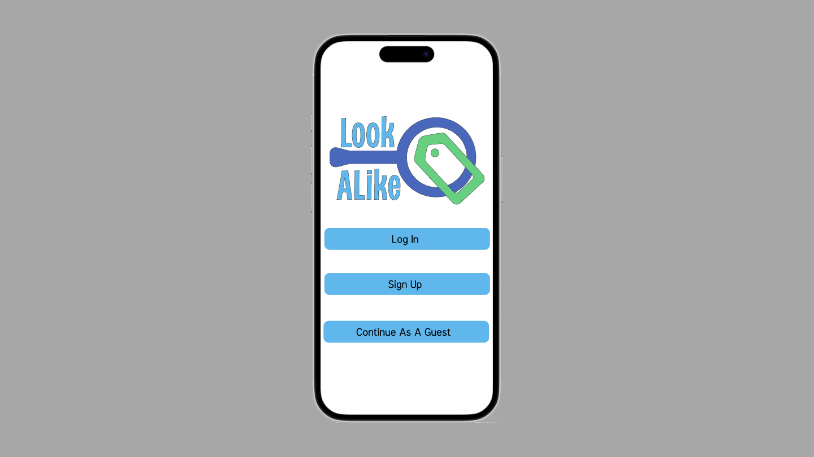

Try out my Look-A-Like Mobile App
Look-A-Like is a fictitious mobile app I designed using Figma, focused on making fitness gear shopping easier on the go. For this project, I developed everything from the ground up—including the name, logo, and overall concept. The app features a clean, user-friendly layout that I refined through both wireframes and low-fidelity prototypes, eventually developing high-fidelity designs to show how the app would look and function. The project helped me explore the full app design process, from initial brainstorming to polished interactive prototypes.